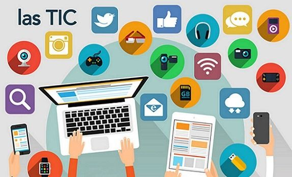

20 herramientas digitales

Gestión de Aprendizaje
Moodle: Plataforma de gestión de aprendizaje (LMS) ampliamente utilizada para crear aulas virtuales, gestionar cursos, y evaluar el progreso de los estudiantes mediante herramientas de seguimiento.
Chamilo: LMS de código abierto que facilita la creación de entornos educativos virtuales interactivos, con un enfoque en la accesibilidad y la colaboración.
Blink: Plataforma de gestión educativa que permite la planificación de clases, el seguimiento del rendimiento estudiantil, y la administración de recursos educativos.
Archivar Documentos
Google Drive: Servicio de almacenamiento en la nube que permite guardar, compartir, y colaborar en documentos, hojas de cálculo, presentaciones, y otros archivos desde cualquier dispositivo.
Dropbox: Plataforma de almacenamiento en la nube que facilita la organización, almacenamiento, y compartición segura de archivos y carpetas entre usuarios.
Crear Aulas Virtuales
Google Classroom: Herramienta educativa que integra servicios de Google para gestionar tareas, comunicarse con estudiantes, y organizar el flujo de trabajo en un entorno virtual.
Edmodo: Plataforma de aprendizaje social que conecta a docentes, estudiantes y padres, permitiendo la comunicación, la gestión de tareas, y la colaboración en un espacio seguro.
Videoconferencias
Google Meet: Servicio de videoconferencias que permite realizar reuniones en línea, clases virtuales y sesiones de tutoría, con integración en las herramientas de Google Workspace.
Zoom: Plataforma popular para videoconferencias que ofrece funciones como salas de grupo, compartir pantalla, y grabación de sesiones, ideal para educación y reuniones.
Teams: Herramienta de Microsoft que combina videoconferencias, chats y colaboración en documentos, utilizada frecuentemente en entornos educativos y empresariales.
Crear Presentaciones
Prezi: Herramienta de presentación dinámica que permite crear presentaciones no lineales y visualmente atractivas, con transiciones suaves y efectos de zoom.
Genially: Plataforma para crear presentaciones interactivas, infografías, y otros recursos multimedia, con un enfoque en la interactividad y la creatividad.
Canva: Herramienta de diseño gráfico que permite crear presentaciones, carteles, infografías y otros materiales visuales mediante plantillas personalizables.
Gamificar el Aprendizaje
Kahoot: Plataforma de aprendizaje basada en juegos que permite a los docentes crear cuestionarios interactivos y competitivos para evaluar el conocimiento de los estudiantes.
Cerebriti edu: Herramienta que ofrece juegos educativos diseñados para desarrollar habilidades cognitivas y conocimientos en diversas áreas temáticas.
Educaplay: Plataforma para crear actividades educativas interactivas, como crucigramas, sopas de letras y cuestionarios, que facilitan el aprendizaje gamificado.
Liveworksheets: Herramienta que permite transformar hojas de trabajo tradicionales en interactivas, ofreciendo ejercicios que los estudiantes pueden completar en línea.
Wordwall: Plataforma que permite crear actividades educativas interactivas como cuestionarios, emparejamientos y juegos, adaptadas a diferentes niveles educativos.
ArbolABC: Sitio web con una colección de juegos educativos para niños, centrado en el desarrollo de habilidades básicas como matemáticas y lenguaje.
Tomi Digital: Herramienta que transforma las clases tradicionales en experiencias interactivas y gamificadas, permitiendo a los docentes evaluar en tiempo real el progreso de los estudiantes.